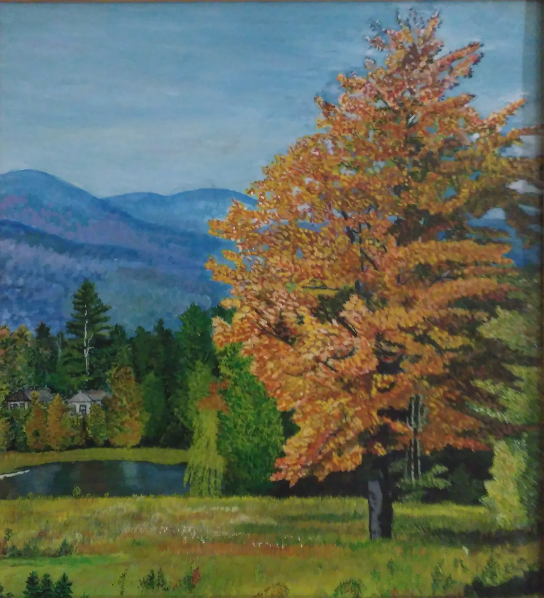

Слава тебе, поднебесный Радостный краткий покой! Солнечный блеск твой чудесный С нашей играет рекой. С рощей играет багряной, С россыпью ягод в сенях, Словно бы праздник нагрянул На златогривых конях! Радуюсь громкому лаю, Листьям, корове, грачу, И ничего не желаю, И ничего не хочу! И никому не известно То, что, с зимой говоря, В бездне таится небесной Ветер и грусть октября... Н.Рубцов